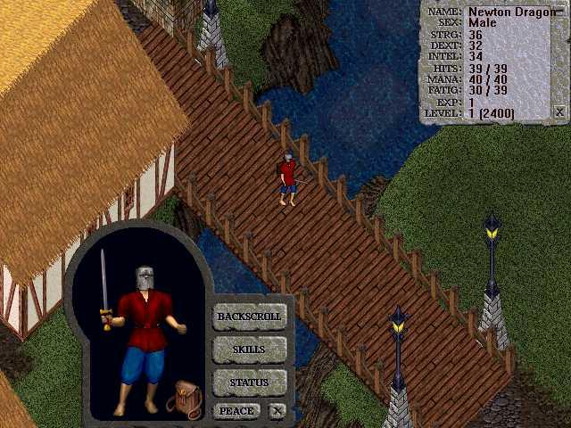
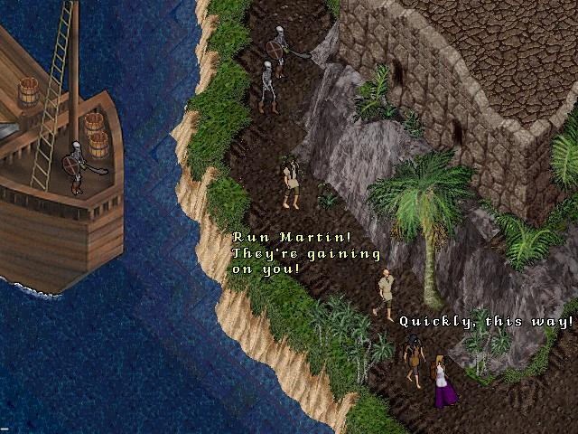
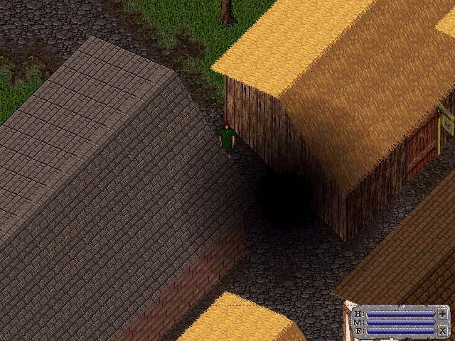
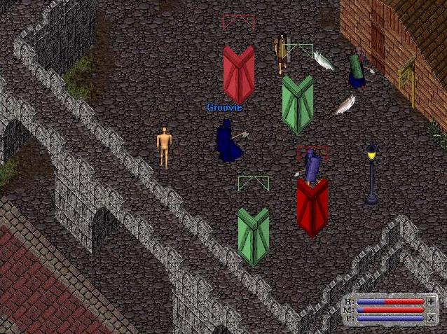
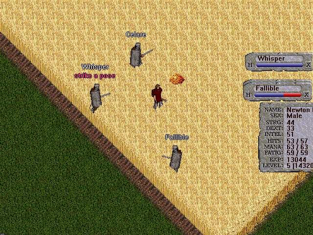
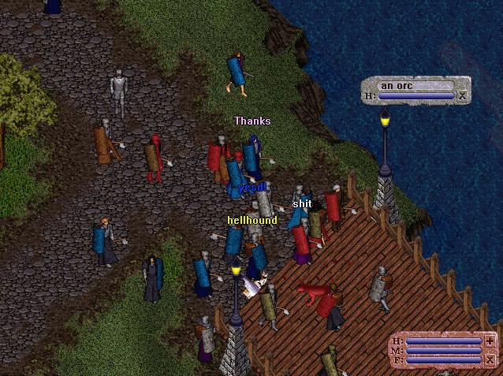
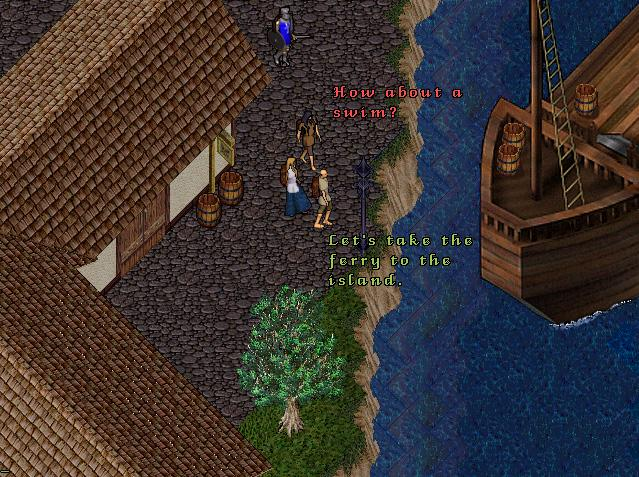
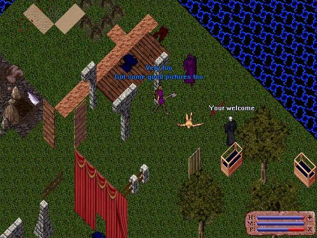
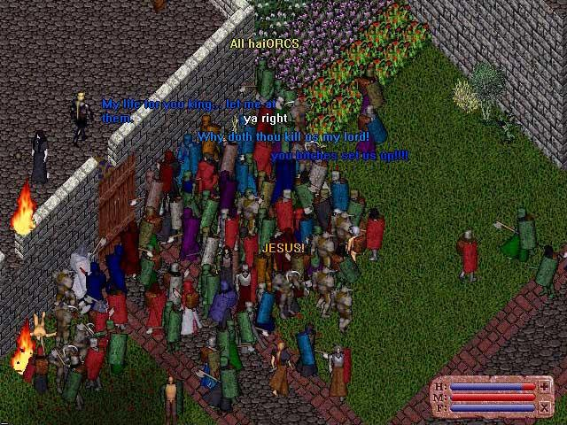

Originally located at: http://www.aschulze.net/ultima/stories9/pre-alpha.htm
Ultima Online Pre-Alpha

The first look on the
paperdoll feature and the character stats window. It was amazing how the figure
in the paperdoll window matched the appearance on the character in
game.

The old Terathan fort. The big ships have been taken
out of the game later, as they caused too much trouble when moved.
[NOTE: The author does not seem to realize that the above shot is a promotional pre-BETA mockup created by OSI to advertise the game. This NEVER appeared in the pre-alpha, as is plainly visible by the improved graphics.]

Here you can see the effect of the darkness
spell, which didn't make it to the release of UO.

Of course there also were lots of obvious bugs in the alpha.

A battle in the wheat field.

People quickly learned that it was an advantage to stick
together.

A trip to Vesper.
[NOTE: Again, the author does not seem to realize that the above shot is a promotional pre-BETA mockup created by OSI to advertise the game. This NEVER appeared in the pre-alpha, as is plainly visible by the improved graphics.]

Apparently the world-designers made some tests here.

May 20 1996: This was the last day of the
Ultima Online pre-alpha test. The character art took a dramatic change for the
better once beta started many months later. Blackthorn and British surveyed the
crowd while a half dozen or so summoned orcs made mincemeat. One player was
asking in perfect roleplaying manner "Why doth thou kill us my lord!" So began
the historic tradition of killing as many players as possible during official
gaming events.
| Next story (Beta) |
09/2002